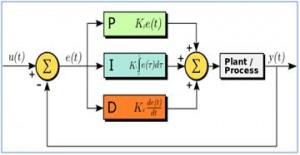
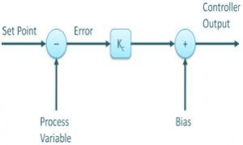
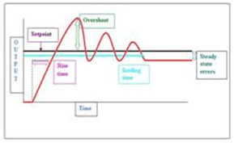
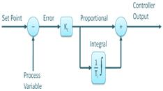
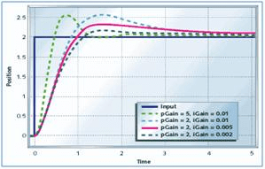
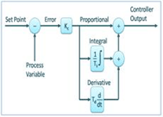
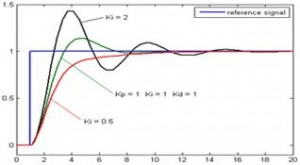
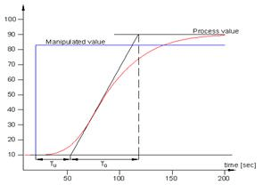
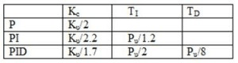
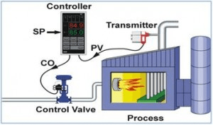

Как следует из названия, в этой статье мы дадим точное представление о структуре и работе ПИД-контроллера. Однако сначала, давайте познакомимся с ПИД-контроллерами.
ПИД-регуляторы находятся в широком диапазоне применений для управления промышленными процессами. Приблизительно 95% операций с замкнутым контуром в промышленной автоматизации используют ПИД-регуляторы. PID обозначает Пропорционально-интегральная-диференциальная составляющая. Эти три контроллера объединены таким образом, что он создает управляющий сигнал.

В качестве контроллера обратной связи он обеспечивает выход управления на желаемых уровнях. ПИД-регулирование осуществлялось с помощью аналоговых электронных компонентов, перед изобретением микропроцессоров. Но сегодня все ПИД-контроллеры обрабатываются микропроцессорами. ПрограммируемыеПрограммируемые логические контроллеры также имеют встроенные настройки ПИД-регулятора. Благодаря гибкости и надежности ПИД-регуляторов, они традиционно используются в системах управления технологическим процессом.
Работа ПИД-регулятора
При использовании недорогого простого контроллера возможны только два состояния управления, например, полностью ВКЛ или полностью ВЫКЛ. Он используется для настроек с ограничением контроля, в котором эти два состояния управления достаточно для целей управления. Однако характер этого контроля ограничивает его использование и, следовательно, заменяется ПИД-контроллерами.
ПИД-регулятор поддерживает выход таким образом, что между переменной процесса и заданной точкой / желаемым выходом с помощью операций замкнутого контура имеется нулевая ошибка. ПИД использует три основных поведения управления, которые объясняются ниже.
П-контроллер:

Пропорциональный или П-регулятор дает выход, который пропорционален текущей ошибке e (t). Он сравнивает желаемую или заданную точку с фактическим значением или значением процесса обратной связи. Полученная ошибка умножается на пропорциональную константу, чтобы получить выход. Если значение ошибки равно нулю, то выход этого контроллера равен нулю.

Этот контроллер требует смещения или ручной сброс при использовании отдельно. Это происходит потому, что он никогда не достигает состояния устойчивого состояния. Он обеспечивает стабильную работу, но всегда поддерживает постоянную ошибку. Скорость реакции возрастает при увеличении пропорциональной константы Kр.
И-контроллер

Из-за ограничения П-контроллера, где всегда существует смещение между переменной процесса и заданным значением, необходим И-контроллер, который обеспечивает необходимые действия для устранения ошибки установившегося состояния. Он интегрирует ошибку в течение периода времени, пока значение ошибки не достигнет нуля. Он содержит значение для конечного устройства управления, при котором ошибка становится равной нулю.
Интегральное управление уменьшает его выход, когда происходит отрицательная ошибка. Он ограничивает скорость реакции и влияет на стабильность системы. Скорость реакции увеличивается за счет уменьшения интегрального усиления Ki.

На приведенном выше рисунке, когда коэффициент усиления И-контроллера уменьшается, ошибка установившегося режима также продолжает уменьшаться. В большинстве случаев контроллер ПИ используется, в частности, когда требуется высокая скорость ответа.
При использовании ПИ-регулятора выход И-контроллера ограничен некоторым диапазоном для преодоления интегральных условий, когда интегральный выход растет даже при нулевом состоянии ошибки из-за нелинейности на установке.
Д-контроллер

И-контроллер не может предсказать будущее поведение ошибки. Поэтому он реагирует нормально после изменения заданного значения. Д-контроллер преодолевает эту проблему, ожидая будущего поведения ошибки. Его выход зависит от скорости изменения погрешности за время, умноженное на постоянную производной. Это дает начало запуска для выхода, тем самым увеличивая системный отклик.

На приведенном выше рисунке ответ контроллера Д больше, по сравнению с контроллером ПИ, а также время установления выходного сигнала уменьшается. Это улучшает стабильность системы за счет компенсации фазового запаздывания, вызванного И-контроллером. Увеличение производного усиления увеличивает скорость реакции..
Итак, наконец, мы заметили, что, объединив эти три контроллера, мы получим желаемый ответ для системы. Различные производители разрабатывают различные алгоритмы ПИД.
Методы настройки ПИД-регулятора
Перед началом работы ПИД-регулятора он должен быть настроен на динамику контролируемого процесса. Дизайнеры дают значения по умолчанию для параметров П, И, Д, и эти значения не могут дать желаемую производительность, а иногда приводят к нестабильности и медленным характеристикам управления. Разработаны различные методы настройки для настройки ПИД-регуляторов и требуют от оператора большого внимания для выбора наилучших значений пропорциональных, интегральных и диференциальных коэффициентов. Некоторые из них приведены ниже.
Метод проб и ошибок: это простой способ настройки ПИД-регулятора. Пока система или контроллер работают, мы можем настроить контроллер. В этом методе сначала нужно установить значения Ki и Kd в нуль и увеличить пропорциональный коэффициент (Kp), пока система не достигнет колебательного поведения. Как только он осциллирует, отрегулируйте Ki (интегральный термин), чтобы колебания остановились и, наконец, отрегулировали Д, чтобы получить быстрый отклик.
Технологическая кривая технологического процесса: это метод настройки с открытым циклом. Он производит ответ, когда к системе применяется шаг ввода. Первоначально мы должны вручную вводить некоторые данные управления в систему и записывать кривую ответа.
После этого нам нужно рассчитать наклон, неподвижное время, время нарастания кривой и, наконец, подставить эти значения в уравнениях П, И и Д, чтобы получить значения коэффициента усиления ПИД.

Метод Zeigler-Nichols: Zeigler-Nichols предложил методы замкнутого контура для настройки ПИД-регулятора. Это метод непрерывного циклирования и метод демпфирования колебаний. Процедуры для обоих методов одинаковы, но поведение колебаний различно. При этом сначала нужно установить постоянную p-контроллера, Kp на определенное значение, а значения Ki и Kd равны нулю. Пропорциональный коэффициент усиления увеличивается до тех пор, пока система не будет колебаться с постоянной амплитудой.
Усиление, при котором система производит постоянные колебания, называется конечным усилением (Ku), а период колебаний называется предельным периодом (Pc). Как только это достигнуто, мы можем ввести значения P, I и D в ПИД-контроллере по таблице Zeigler-Nichols, зависит от контроллера, используемого как P, PI или PID, как показано ниже.

Структура ПИД-регулятора
ПИД-регулятор состоит из трех членов, а именно пропорционального, интегрального и диференциального. Объединенная работа этих трех контроллеров дает стратегию управления процессом контроля. ПИД-регулятор управляет переменными процесса, такими как давление, скорость, температура, расход и т. д. В некоторых приложениях используются ПИД-регуляторы в каскадных схемах, где для достижения контроля используются два или более ПИД.

На приведенном выше рисунке показана структура ПИД-регулятора. Он состоит из блока PID, который дает свой вывод для обработки блока. Процесс / установка состоит из конечных устройств управления, таких как исполнительные механизмы, регулирующие клапаны и другие управляющие устройства для управления различными процессами промышленности / установки.
Сигнал обратной связи от технологической установки сравнивается с уставкой или сигналом u (t), и соответствующий сигнал ошибки e (t) подается на алгоритм ПИД-регулирования. Согласно пропорциональным, интегральным и диференциальным расчетам в алгоритме, контроллер производит комбинированный ответ или управляемый выход, который применяется к устройствам управления установкой.
Все управляющие приложения не нуждаются во всех трех элементах управления. Комбинации, такие как элементы управления PI и PD, очень часто используются в практических приложениях.